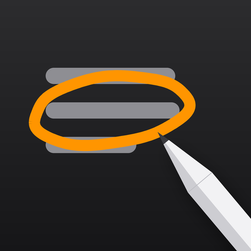

Inkover
Draw on any web page in Safari with Apple Pencil. Your finger keeps browsing.
Turn it on
- Open the Settings app.
- Tap Apps, then Safari, then Extensions.
- Tap Inkover and turn on Allow Extension.
- Under Permissions, set All Websites to Allow, so it works on every page without asking.
Then open any page in Safari and tap the Inkover button in the address bar. If you do not see it, tap the extensions button, the puzzle piece, and choose Inkover.
How it works
- Lock captures the Pencil. While locked, the Pencil only draws and never taps a link. Your finger still scrolls, pinches and taps as normal. Tap the lock again to hand the Pencil back to the page.
- Pen, Highlighter, Eraser. Hold still before lifting to turn a rough circle into a clean ellipse, a box into a rectangle, or a wobbly line into a straight one. Scribble over ink to erase it.
- Trail follows the Pencil and fades in under a second. Spotlight dims everything but the line under the Pencil.
- Ink stays attached to the words it was drawn on. It moves when the page reflows and hides when its section is hidden. It is saved per page until you clear it.
Privacy
Ink is stored on this iPad and never leaves it. Inkover has no account, no sync, no server and no analytics. It collects nothing.